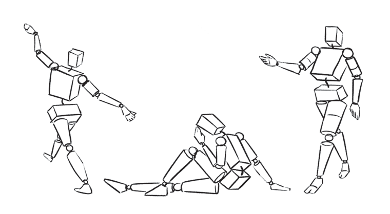

Drawing animals
Many animal drawings are guided by circle and cylinder shapes. What differs is the dimensions between one type of animal and another. Small animals such as dogs use small dimensions of the circle and cylinder shapes. Large animals such as cows use large dimensions of the circle and cylinder shapes. Figure 12 shows an example of a dog image after combining these shapes.